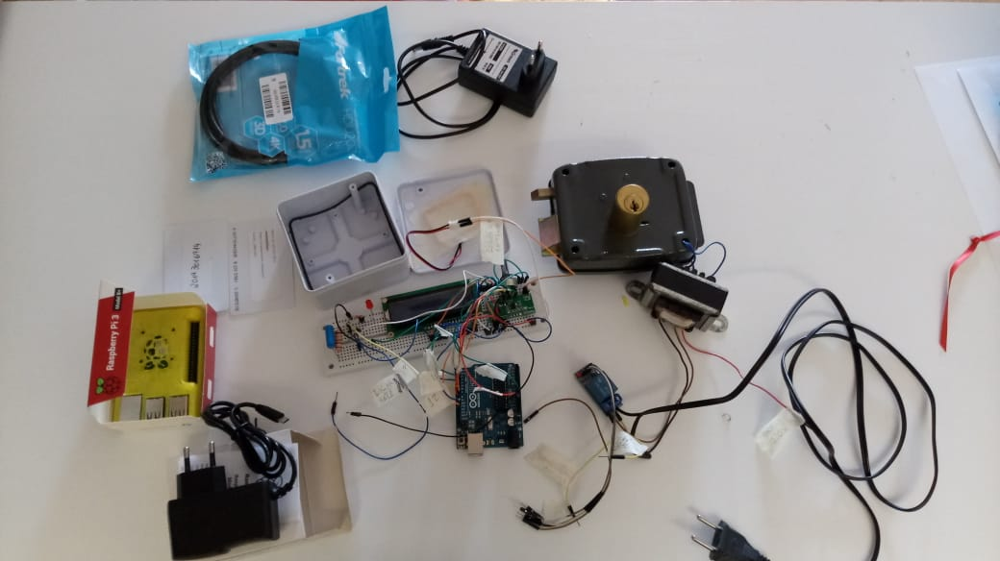

Nosso projeto surgiu com o objetivo de facilitar a entrada e saída dos laboratórios do Intituto Federal do Paraná Campus Curitiba, tendo um melhor controle do acesso de quem entra e sai, além de diminuir o custo de fechaduras comuns, trazendo um ganho financeiro e administrativo à Instituição. Atualmente no campus as fechaduras de salas e laboratórios são comuns, sendo abertas e fechadas com chaves. Isso causa um problema: quando há a necessidade de manutenção desta, além do alto custo na troca da fechadura, há um elevado custo com as cópias de chaves. Somado a isso, tem-se o longo tempo necessário para essa manutenção. Com isso em mente, foi desenvolvida uma fechadura controlada por Arduino atrelado a um leitor de cartão RFID (Radio Frequency Identification), que permite uma identificação rápida e automática.
O projeto consiste em criar um banco de dados, armazenado em um servidor, mapeando todos os laboratórios do campus Curitiba do IFPR (Instituto Federal do Paraná) e os professores que têm permissão de acessá-los. Junto ao banco, criaremos uma interface web para controlar o acesso aos laboratórios, mostrando se eles estão disponíveis para uso ou não, além de disponibilizar um registro dos acessos, contendo quem acessou aquele ambiente e em qual horário.